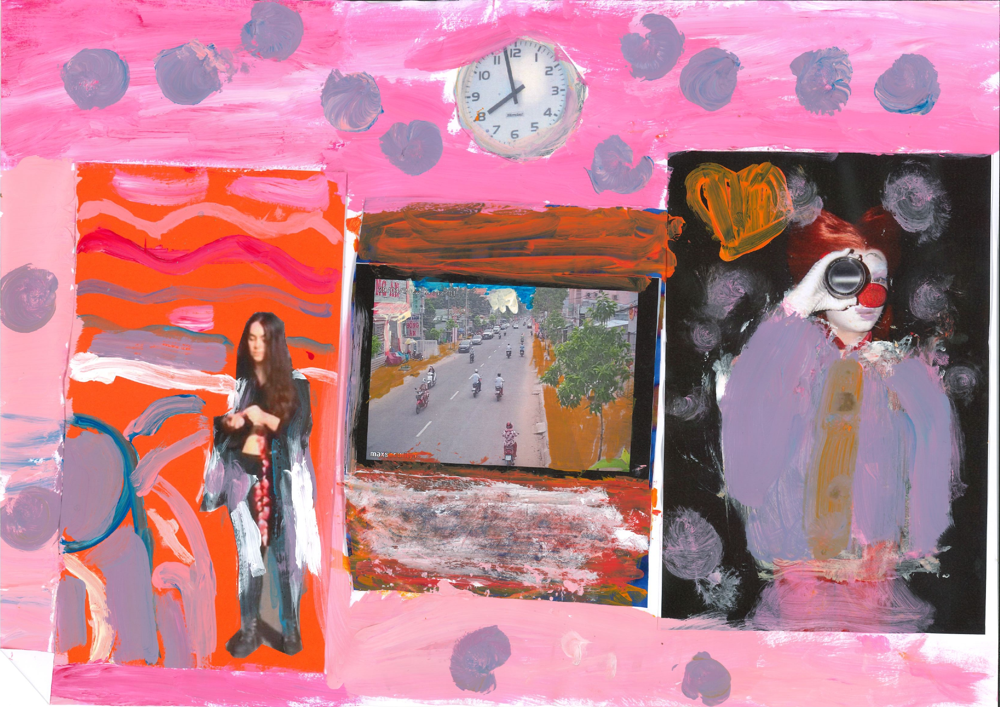
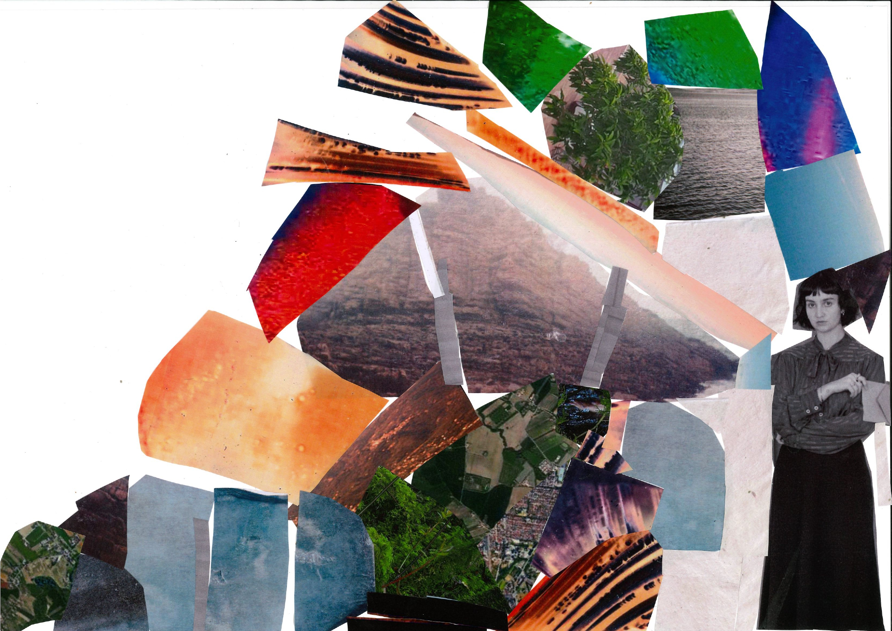
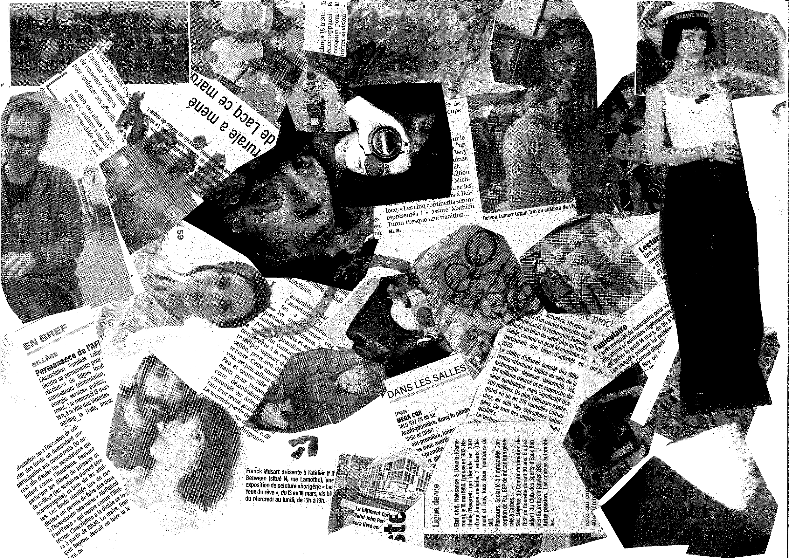
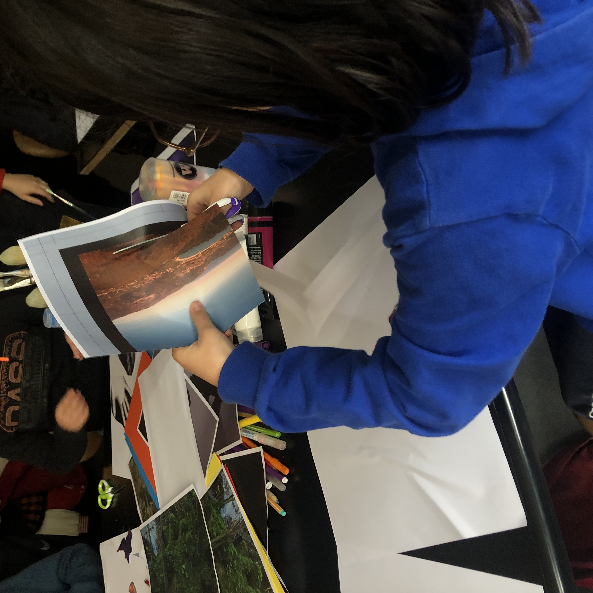

En avril 2024, nous sommes invitées par Mains d’Oeuvres, lieu culturel associatif situé à Saint-Ouen dans le 93, à visiter l’exposition « La morsure du détour » des diplômé.e.s de Photographie de Paris 8.
Nous proposons deux ateliers aux enfants des centres de loisirs alentours (Gavroche, La Fontaine, Nelson Mandela, PEF).
Nous souhaitions évoquer avec les enfants l’idée même de ce qu’est une visite d’exposition : comment les images que nous glanons de-ci de-là au quotidien peuvent-elles nourrir notre propre créativité ? Les enfants se sont alors réapproprié les photographies présentes dans l’exposition par le découpage-collage, et ont créé un fanzine collectif fait de colle, de peinture et de dessin. Certains enfants se sont même emparés de fragments d’images et de pellicule présentés au sol dans l’exposition et laissés à disposition des visiteurs !


